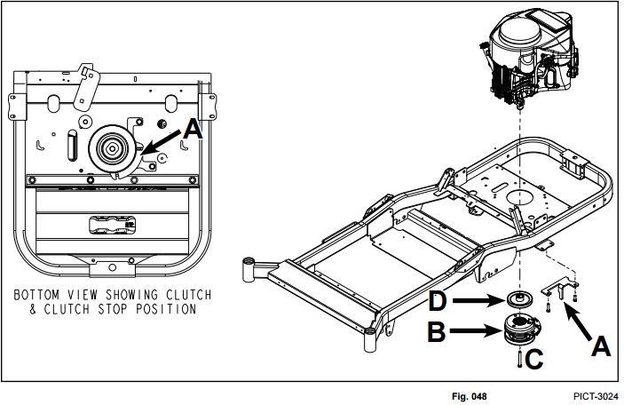
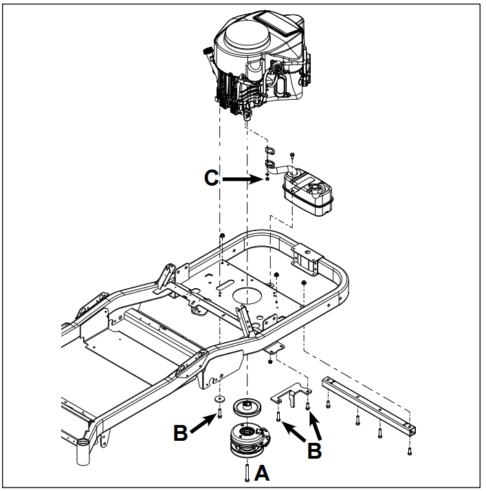
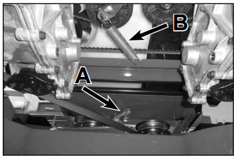
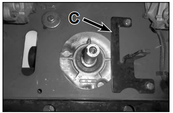
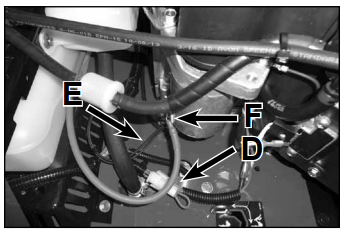
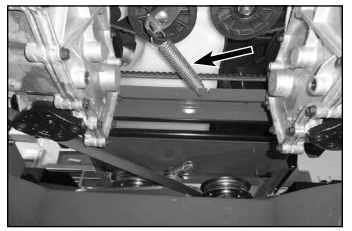

Engine
Engine Replacement
Note: For engine service information, please see the service information provided by the engine manufacturer.
PTO Clutch & Cluth Stop Mounting (All Models)

- A. Clutch stop bracket
- B. PTO Clutch
- C. PTO clutch bolt - apply Loctite (R) 242-55 ft-lbs. (76 Nm)
- D. Drive pulley- marked for orientation
Engine Mounting Exploded View
Engine Mounting - Kawasaki Engine

- A. PTO clutch bolt - apply Loctite (R) 242-55 ft-lbs. (76 Nm)
- B. Engine/clutch stop mounting bolts - Loctite 242-33 ft-lbs. (44 Nm)
- C. Muffler to engine fastener - 13 ft-lbs. (17.5 Nm)
Engine Removal
- Raise seat and disconnect battery terminals.
- Safely raise and support rear of unit so rear wheels are off the ground.
- Remove PTO belt tensioner spring (A) from the deck to relieve PTO belt tension (Fig. 050). See PTO Belt Replacement 48, 54 & 60 Inch Deck on page 6-5.

- Remove PTO belt fro PTO clutch.
- Disconnect the wire harness connection from the PTO clutch.
- Remove the PTO clutch bolt and then remove the clutch from the engine crankshaft.
- Remove the drive belt tensioner spring (B).
- Remove the belt from around the crankshaftdrive pulley and remove the drive pulley from the engine crankshaft. Make note of pulley orientation for assembly.
- If necessary, remove rear engine guard.
- Remove the fasteners that secure the heat shield to the muffler and frame and remove the heat shield. If necessary, remove the muffler from the engine.
- Remove the (4) engine to frame mounting bolts. Make note of clutch stop bracket (C) mounting and orientation.

- Safely disconnect the fuel and vent lines from engine.
- Remove the throttle and hoke cable from carburetor linkage.
- Disconnect the chassis-to-engine electrical connection.
- Disconnect the positive battery cable (F) from the starter motor (Fig. 052).

- The engine can now be lifted vertically from the frame.
Engine Installation
- Position the engine onto the frame.
- Connect the battery ground wires (E) to the engine block, and connect the positive battery wire (F) to the engine starter motor.
- Connect the chassis to engine harness connector (D).
- Install the fuel and vent lines to the engine.
- Install the throttle and choke cables to carburetor linkage.
- Apply Loctite (R) 242 to the (4) engine mounting bolts.
- By hand, install the (4) engine mounting bolts.
Note: Some of the engine mounting bolts also secure the clutch stop bracket and stiffener tube to the frame. See the exploded views for application and mounting location.
- In a cross pattern, torque the 94) engine mounting bolts to specification - 33 ft-lbs. (44 Nm).
- Install heat shield to the muffler mounting screws and torque to specification - 5 ft-lbs. (7 Nm)
- Install the heat shield and muffler to frame mounting screws and torque to specification - 17 ft-lbs. (23 Nm).
- Apply anti-sieze to the engine crakshaft and the ends of the drive pulley onto the crakshaft and hold in position.
Note: The drive pulley is marked "CLUTCH SIDE" for proper installation (Fig. 054).
- Install the drive belt around the drive pulley.
- Install the drive belt tensioner spring as oriented below (Fig. 055).

- Aplly Loctite (R) 242 to the PTO clutch bolt threads.
- Install the PTO clutch onto the crankshaft. Be sure PTO clutch engages with the clutch stop bracket.
- Install and torque the PTO clutch bolt to specification - 55 ft-lbs. (76 Nm).
- Install PTO belt onto PTO clutch. Verify proper PTO belt routing; see "PTO" Belt Replacement amd Belt Routing" on page 6-4. Install the PTO belt tensioner spring to the deck.
- Connect battery cables and verify engine oil level.
- Safely start engine and verify proper operation.